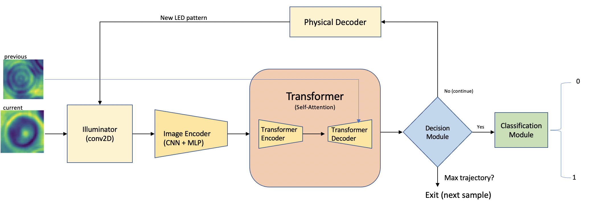

| Paper PDF |

|
The image acquisition process from a digital microscope can be automated by optimizing the physical layer with machine learning algorithms. In this paper, a recurrent visual attention mechanism, based on self-attention, is used to generate a latent space in conjugate with optimizing the illumination pattern for the classification task. The network decides the information available in the latent space to decide if the information is sufficient to make a classification decision. The network exits from the loop when a decision is made for the latent space. Several experiments are conducted in this work to understand how an adaptive LED illumination pattern for each sample provides better classification accuracy. The number of iterations per image sample for the network to make a decision (average length of the trajectory) is observed to correlate with the classification accuracy. |
|
|
| Paper: |
Code and Data:
|